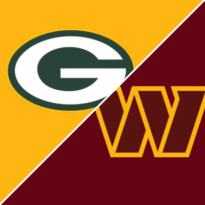

Green Bay Packers Recap

Aaron Rodgers finished the game face down on the turf after sailing a
lateral out of bounds on a frantic, failed final play.
This is not exactly what the four-time NFL MVP envisioned when he
returned for another season in Green Bay.
br Rodgers and the
offense sputtered, penalties piled up at the most inopportune moments
and the Packers lost their third game in a row, 23-21 to the
Washington Commanders on Sunday for their longest skid since 2018.
SCORE:
Green Bay Packers: 21
Washington Commanders: 23
Milwaukee Bucks
 In their home opener, the Milwaukee Bucks left the Houston Rockets
on the launching pad from tip-off, never trailing on their way to a
convincing 125-105 victory. After a somewhat deferential opener in
Philly, Giannis poured in 44 points on just 21 shots in a mere 28
minutes.
In their home opener, the Milwaukee Bucks left the Houston Rockets
on the launching pad from tip-off, never trailing on their way to a
convincing 125-105 victory. After a somewhat deferential opener in
Philly, Giannis poured in 44 points on just 21 shots in a mere 28
minutes.
It became clear pretty early that the Baby Rockets could do very
little against Giannis and Co., with the Bucks starting off on a 16-2
run, including the first 13 points unanswered. Milwaukee led 41-23
after one, shooting 65.2% and hitting 7 of their first 10 triples.
Powered by Jalen Green, the Rockets briefly shrank the lead to as
close as 13, but Giannis put together a 7-1 personal run to win the
quarter by one, and give his team a 67-48 advantage at the half.
Houston torched the nets from outside in the third, drawing as close
as 12 by hitting 6 of their 11 three-point attempts. Still, Giannis
was simply too much for even the most scorching perimeter shooting,
pouring in 18 third-quarter points to keep the Rockets at bay, nearly
notching 40 in three quarters. Once again, the Bucks managed to even
things out and reestablish their 19-point lead, heading into the
fourth up 98-79. Giannis exited with 8:08 remaining and up 22, though
Bud waited almost six more minutes before emptying his bench, allowing
for MarJon Beauchamp’s NBA debut, followed by his first NBA bucket.
Those would be the final Milwaukee points as they finished off Houston
125-105 to move to 2-0 on the young season.